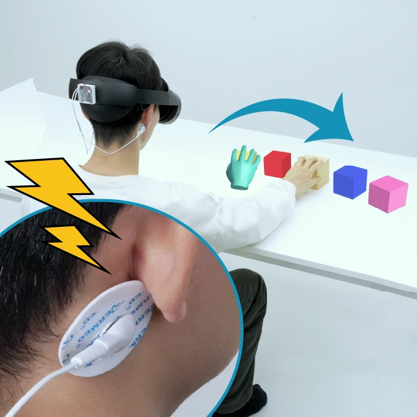
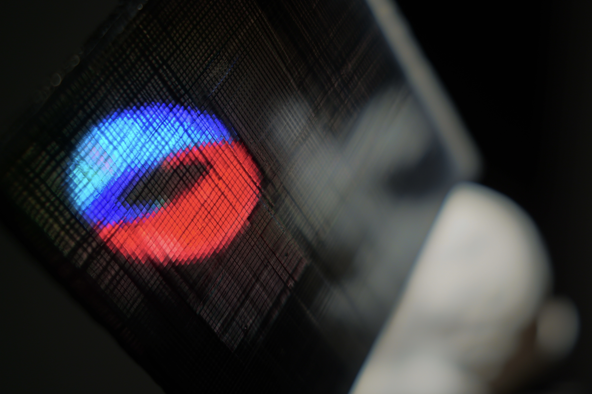
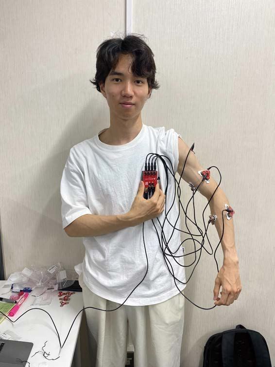
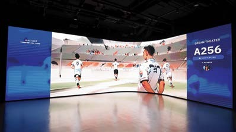
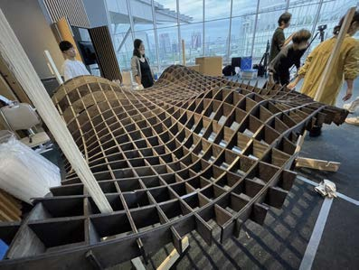
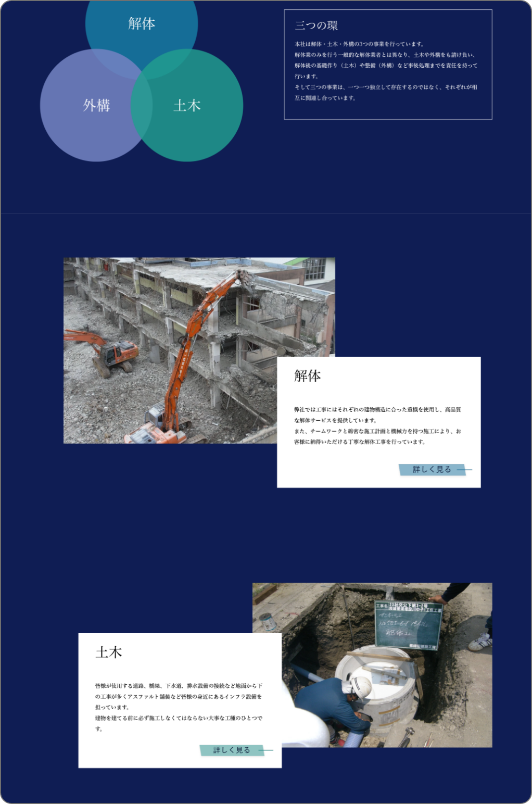
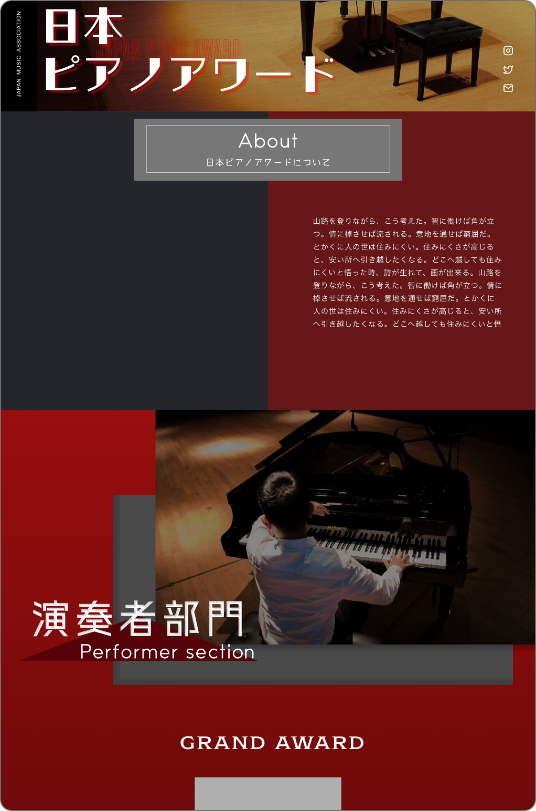
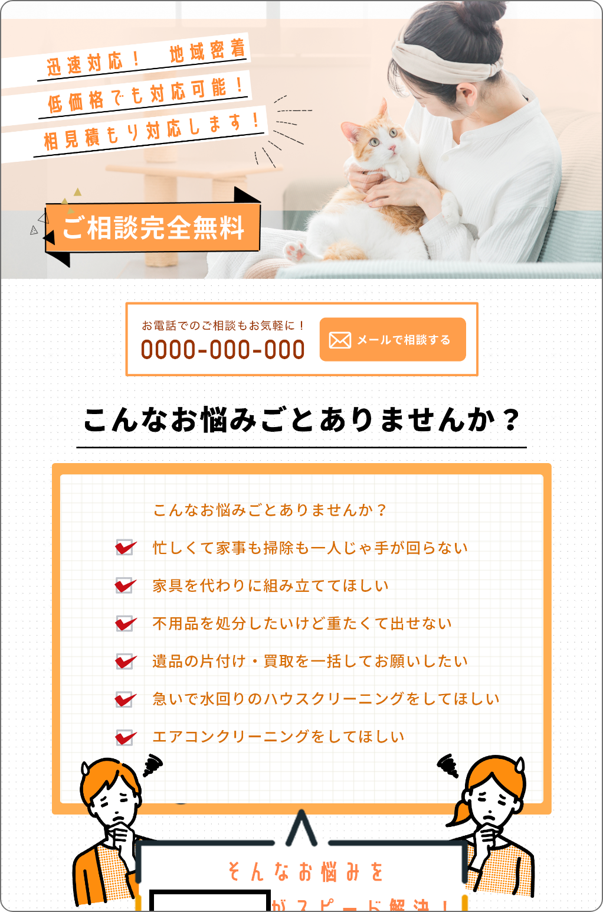
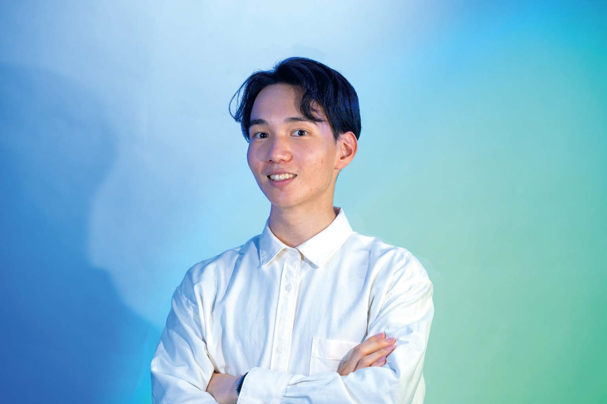

01 / PERCEPTIONVestibular Stimulation
Enhances Hand Redirection
感覚の仕組みを使って、VRの体験を広げる。前庭電気刺激と視覚の組み合わせから、手の位置の知覚を探った研究。
Engineering, research & design
01 / EXPLORATIONS
Perception, interaction,
and things made tangible.

01 / PERCEPTION感覚の仕組みを使って、VRの体験を広げる。前庭電気刺激と視覚の組み合わせから、手の位置の知覚を探った研究。

02 / OPTICSデジタルな映像と、その向こうの世界を一緒に見る。素材と製法を試しながら、網膜投影型ARの透明度を高める光学素子を製作。
Student Research Competition
1st place · Undergraduate

筋肉の活動を読み取り、別の身体へ動作を伝える。身体と電気回路をつなぎながら探った、動作複製のプロトタイプ。

Dream Theaterの映像制作に参加。ユニフォームのLoRAモデル学習とVid2Vidで、夢のように揺らぐサッカーの世界を制作。

日本科学未来館でのラボ展。木組みの火棚の設営、CMAを用いた展示のセットアップと説明に携わりました。

Corporate website · 6 pages

Landing page design

Landing page design
02 / THE PERSON BEHIND THE WORK

Stay curious.
Make things.
Share the joy.
2002年生まれ、日本在住。幼い頃の夢は、発明家とスーパーヒーロー。かっこいいものをつくることも、人を笑わせることも、昔から好きでした。
オーストラリアで過ごした4年間を経て、筑波大学へ。落合陽一率いるデジタルネイチャー研究室で、網膜投影型ARや人間の感覚に関わるHCI研究に取り組みました。シカゴ大学への研究留学では、電気刺激によってVRの体験を広げる研究を行いました。
筑波大学大学院 情報学学位プログラムを修了し、学位プログラム長賞を受賞。2026年4月から、日本IBMでソリューションエンジニア／Forward Deployed Engineerとして働いています。
知らないことは調べる。面白そうなら、まず試す。そして「これは楽しいから、君もやろうよ」と分かち合う。テクノロジーを通して、そんな喜びを増やしていきたいと思っています。
EXPERIENCE & RECOGNITION
Solution Engineer / Forward Deployed Engineer
大学院 情報学学位プログラム 修了
学位プログラム長賞
Vestibular Stimulation Enhances Hand Redirection
Full paper
Student Summer Research Fellowship
Human Computer Integration Lab · Prof. Pedro Lopes
Student Research Competition
1st place · Undergraduate
筑波大学 ARE 2022 優秀賞
先導的研究者体験プログラム（ARE）で研究室に参加
03 / SAY HELLO
面白いこと、気になること。
まずは、話しましょう。